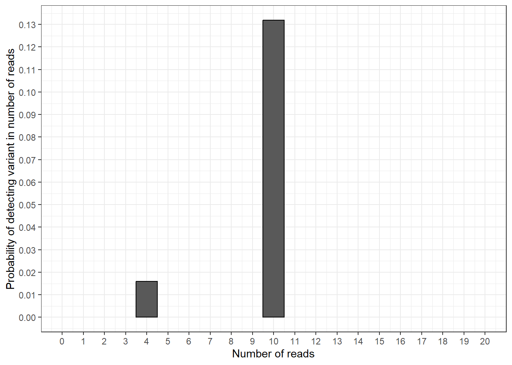
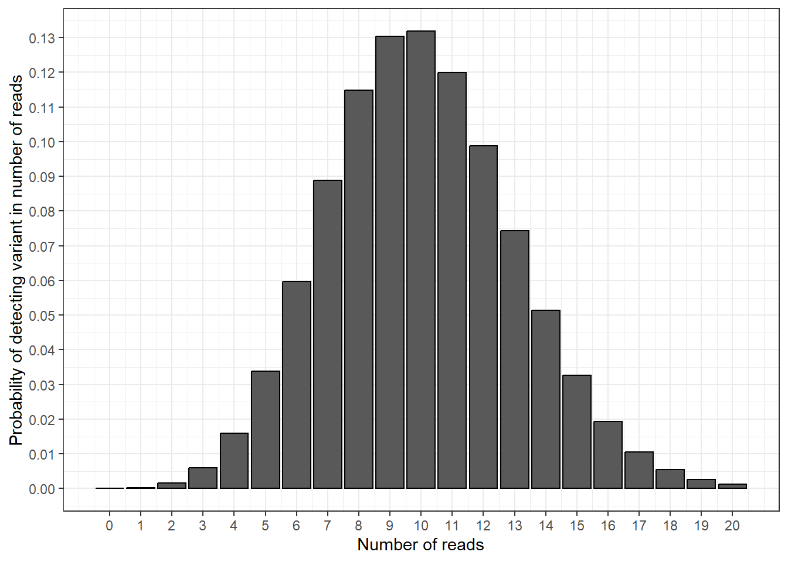
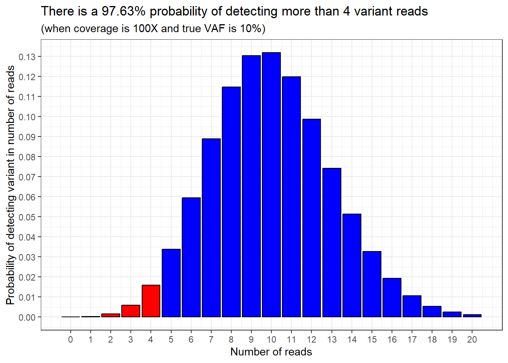
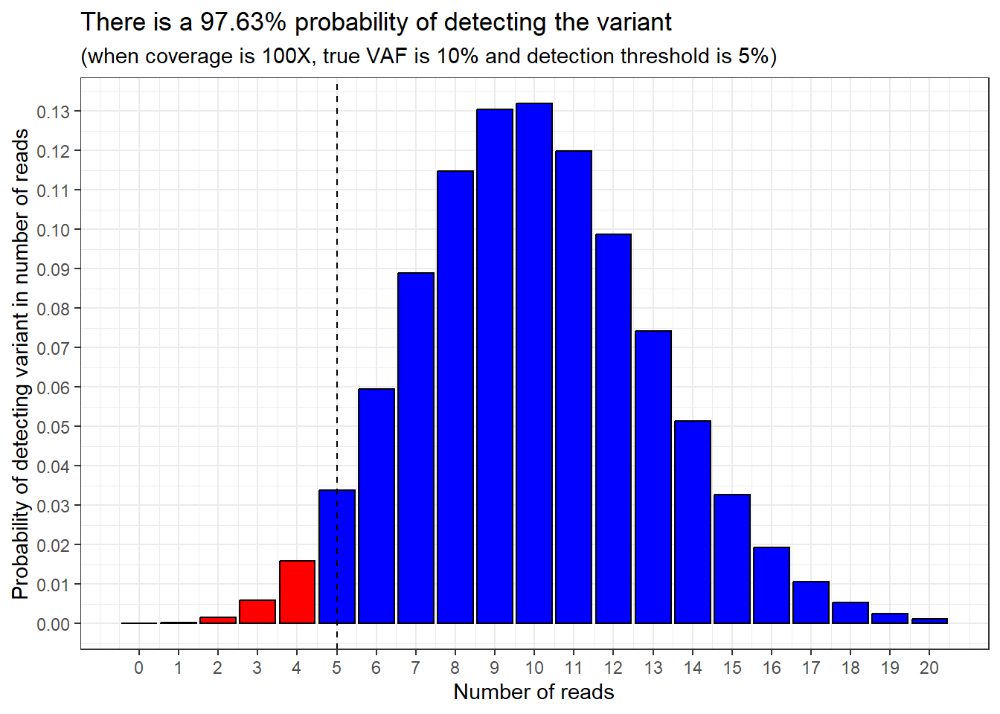

Show code
dbinom(10, 100, 0.1)[1] 0.1318653April 15, 2026
As part of a recent project to validate a next generation sequencing (NGS) test for leukemia, I needed to learn about how binomial statistics can be used to estimate a test’s limit of detection.
To help with my understanding, I made this interactive online app.
This blog-post talks aims to explain the theory of how this works. It is intended to be read by people who already have an understanding of the technical details of next generation sequencing, including the concepts of coverage and variant allele frequencies.
If you have any comments or suggestions, please get in touch!
In cancer genetic testing, we want to avoid false negative results.
A false negative result is when the lab reports that a patient’s sample did not contain a genetic variant, when really it did.
That means if we don’t detect a variant in a sample there are 2 possibilities:
Consequently, we need to answer the following question:
if we don’t see a genetic variant at a genomic coordinate, how confident can we be that there truly isn’t a genetic variant at that genomic coordinate in the sample?
Answer: it depends
It depends on 3 factors:
Let’s go through those factors one by one:
The depth of coverage (or “coverage” for short) is the number of sequencing reads that overlap a specific genomic coordinate.
Coverage will vary from run to run, sample to sample, and coordinate to coordinate.
If we use unique molecular identifiers (UMIs) in our sequencing, we can make the assumption that every sequencing read comes from one DNA molecule.
That means, if we get 100 reads overlapping a coordinate, we assume we have sequenced 100 molecules containing that coordinate.
When we talk about the variant allele frequency we want to exclude, we are talking about the true frequency of the variant in the sample, not whatever frequency we measure from our test.
Let’s imagine we are all-knowing gods (yay), and we can see individual molecules of DNA. We look at a tube of DNA and count that there are 100 million molecules of DNA, and 10 million of those molecules contain a particular variant. That means our tube of DNA (our sample) has a variant allele frequency of 10%.
For clarity, let’s call this our “true VAF”.
Now let’s go back to being mere mortals who run tests in a genetics lab (sigh). Not every molecule of DNA in the tube will be sequenced by our test, because not all the sample gets run through the sequencer. That means we will only sequence a subset of those molecules, and then calculate a VAF based on the results. We can call this our “measured VAF”.
The difference between the “true VAF” and our “measured VAF” will be important later on.
The third factor is that we are looking at the results of a bioinformatic pipeline, which has a particular pre-set VAF threshold for presenting variants in the output.
Where this VAF threshold is set will have an impact on our confidence in excluding a variant.
For example, let’s say there is a variant present in 10 reads at 100X coverage – the measured VAF is 10%. But if the variant calling threshold is 20%, then we will not be shown the variant in the pipeline output. Which means we would still not report the variant, and it would be a false negative.
I’ve already mentioned that not every molecule of DNA in our sample tube will be sequenced by our assay.
These are two key points:
We are only sequencing a subset of DNA molecules from the sample
It is completely random which molecules end up in the sequenced subset
Let’s go back to the example from before: we have a sample tube which contains 100 million molecules of DNA, and the “true VAF” of the variant we are interested in is 10%.
If we randomly sequence only 100 molecules, how many will contain the variant?
Well, it’s actually impossible to say for certain, because it is totally random which 100 molecules end up being sequenced out of the 100 million molecules in the tube.
But what we can do is predict the likelihood of different possibilities.
This is where the statistics comes in.
We can use a binomial distribution calculation, as recommended by the Association for Molecular Pathology in their guidelines for validation of NGS panels (Jennings et al, 2017).
I will be perfectly honest: I am not a statistician, or an all-knowing god.
I am just a humble clinical scientist, trying my best to understand.
That said, this is how I think it works …
Binomial statistics starts with these concepts:
Every time you sample data is a “trial”
The outcome of a trial can only be either “success” or “failure”
The probability of success remains constant whilst you’re running trials
We can map these concepts onto next generation sequencing:
Each “trial” is a sequencing read
The outcome is that the read either has a variant or doesn’t have a variant
The probability of the read having a variant is the true VAF in the sample
Let’s then use binomial distribution to answer this question: how likely is it that 10 reads out of our randomly selected 100 reads will contain the variant?
In Microsoft Excel we can do this calculation:
=BINOM.DIST(10, 100, 0.1,FALSE)
The number of successes is 10 (i.e. number of reads with the variant)
Total number of trials is 100 (i.e. the coverage, our total number of reads)
The fixed probability is 0.1 (10%) (i.e. the true VAF)
The final argument is FALSE because we are not calculating a cumulative probability (yet)
In R, we can use the dbinom function.
This means there is a 0.13 (13%) chance of finding exactly 10 variant reads if we sequence 100 reads (i.e. 100X coverage) from our sample which has a true VAF of 10%.
If you want to look at the full binomial distribution equation (and if so, can we be friends?), I’ve included a worked example in the Section 8.
Let’s take another random example. Let’s say that, instead of 10 variant reads, we want to calculate the probability of finding exactly 4 variant reads.
We can recalculate this with R or Excel, changing the first argument to 4, instead of 10.
=BINOM.DIST(4, 100, 0.1,FALSE)
The probability of finding exactly 4 variant reads would be 0.0158746 (1.6%). So it would be less likely, but still possible.
For me, this all makes more sense when we plot the results as a graph.
library(tidyverse)
df_data_for_plot <- data.frame(
n_reads = c(10, 4)) |>
mutate(y_prob = dbinom(x = n_reads,
size = 100,
prob = 0.1))
plot_prob_col <- ggplot(df_data_for_plot, aes(x = n_reads, y = y_prob)) +
geom_col(colour = "black", width = 1) +
theme_bw() +
labs(x = "Number of reads",
y = "Probability of detecting variant in number of reads") +
scale_y_continuous(breaks = seq(0, 0.15, by = 0.01)) +
scale_x_continuous(breaks = seq(0, 20, by = 1),
limits = c(0, 20))
plot_prob_col
In this plot we can see the results from our calculations: the probability of finding exactly 10 variant reads is around 0.13 and the probability of findings exactly 4 variant reads is around 0.016.
We can now add in the probabilities for all the other possible numbers of variant reads we could find.
df_new_data_for_plot <- data.frame(
n_reads = seq(0, 20)) |>
mutate(y_prob = dbinom(x = n_reads,
size = 100,
prob = 0.1))
plot_prob_density <- ggplot(df_new_data_for_plot, aes(x = n_reads, y = y_prob)) +
geom_col(colour = "black") +
theme_bw() +
labs(x = "Number of reads",
y = "Probability of detecting variant in number of reads") +
scale_y_continuous(breaks = seq(0, 0.15, by = 0.01)) +
scale_x_continuous(breaks = seq(0, 20, by = 1))
plot_prob_density
In this plot, we have calculated the probability of detecting a variant in 1 read, 2 reads, 3 reads etc. This gives us a nice curve of probabilities, and shows that measuring 10 variant reads is the most likely outcome (the bar at 10 reads is the highest).
Instead of calculating the probability of measuring exactly 4 variant reads, we could calculate the probability of measuring 4 variant reads or fewer. This would mean the area within the bars to the left of and including 4 in the plot.
In Microsoft Excel, we use:
=BINOM.DIST(4, 100, 0.1,TRUE)
Pay attention to the last argument, which changed from FALSE to TRUE
And in R we use the pbinom function.
This tells us that the probability of detecting 4 variant reads or fewer in our sample is 0.0237 (2.37%).
Then we can flip this around: the probability of detecting more than 4 variant reads in our sample must be 100% - 2.37%, which equals 97.63%.
We can show this by highlighting the sections of the probability distribution we’re talking about.
97.63% of the bars are shaded in blue, and 2.37% of the bars are shaded in red.
plot_prob_density_colour <- plot_prob_density +
geom_col(data = df_new_data_for_plot |>
filter(n_reads <= 4),
colour = "black", fill = "red") +
geom_col(data = df_new_data_for_plot |>
filter(n_reads > 4),
colour = "black", fill = "blue")
plot_prob_density_colour +
labs(title = paste0("There is a ",
round((1-pbinom(4, 100, 0.1))*100, 2),
"% probability of detecting more than 4 variant reads"),
subtitle = "(when coverage is 100X and true VAF is 10%)")
This now brings the VAF detection threshold into play.
Sticking with our example, if the VAF detection threshold is 5% VAF, and we have randomly sampled 100 reads (100X coverage), we would need at least 5 variant reads in order for the pipeline to detect the variant.
Adding in this information is easy, because it’s what we already did in the last step: we ask what the cumulative probability is of detecting more than 4 variant reads in our sample.
Here is the same plot as above, but with a vertical dashed line showing were our VAF detection threshold is.

The example I’ve shown so far used simple numbers that are easy to working out percentages for: 10% of 100 reads is 10 reads etc.
But what if we want to simulate scenarios and vary the coverage, true VAF and VAF detection threshold numbers?
Using R, I made a function to do this, which I then added to the interactive app which I’ve linked to at the top of this post.
plot_read_distribution <- function(x_max = 50, coverage, vaf,
calling_threshold) {
number_of_reads_needed_to_call <- round(coverage*(calling_threshold/100), 0)
number_of_reads_which_wont_call <- number_of_reads_needed_to_call-1
probability_of_not_calling_variant <- pbinom(q = number_of_reads_which_wont_call,
size = coverage,
prob = vaf/100)
probability_of_calling_variant <- 1-probability_of_not_calling_variant
df_data_for_plot <- data.frame(
n_reads = seq(0, x_max)) |>
mutate(y_prob = dbinom(x = n_reads,
size = coverage,
prob = vaf/100),
status = case_when(
n_reads >= number_of_reads_needed_to_call ~"Detected",
n_reads < number_of_reads_needed_to_call ~"Not detected"))
plot <- ggplot(df_data_for_plot, aes(x = n_reads, y = y_prob)) +
geom_col(aes(fill = status), colour = "black") +
scale_fill_manual(values = c("blue", "red")) +
geom_vline(xintercept = number_of_reads_needed_to_call,
linetype = "dashed") +
theme_bw() +
theme(legend.position = "bottom") +
scale_x_continuous(breaks = c(seq(0, x_max, by = 10),
number_of_reads_needed_to_call)) +
labs(x = "Number of reads",
y = "Probability of detecting variant in number of reads",
subtitle = paste0("If coverage is ", coverage, "X and true VAF is ",
vaf,"% and VAF detection threshold is ",
calling_threshold, "% (",
number_of_reads_needed_to_call,
" reads)"),
title = paste0("Probability of detecting variant: ",
round(probability_of_calling_variant*100, 2), "%") ,
fill = "Variant status")
return(plot)
}Then we can imagine a scenario where we have a true VAF of 10% and a VAF detection threshold of 4%, and the coverage is 200X.
If we don’t detect a variant, how confident can we be that there wasn’t a variant with a true VAF of 10% that we missed?
The answer is 99.95%.
But what if the true VAF was only 2%?
Then we’d be in trouble, because our VAF threshold is set at 4%, and at 200X the chance of detecting the variant would be pretty low anyway.
This means it would be a really bad idea to issue a normal report and say that we had excluded variants down to 2% VAF, because if a variant was present at a true VAF of 2% there is only a 4.93% chance that we would detect it.
Instead, to get over 99.5% confidence of detecting a variant with only 2% true VAF, we would have to lower the VAF detection threshold to 1% and increase the coverage to 1000X.
Binomial statistics is really useful for estimating the confidence with which we can detect genetic variants with NGS under different scenarios. If you have spotted an error in this blog-post, or have any comments, feel free to let me know.
Here is a breakdown of the original binomial probability equation, which is shown below.
Full disclosure: I used Claude to generate this worked example, and then checked it in R to make sure it was correct.
x = variant reads, n = coverage and p = true VAF.
\[ P(X = x) = \binom{n}{x} p^x (1-p)^{n-x} \]
There are 3 sections.
\[ \binom{n}{x} \]
\[ p^x \]
\[ (1-p)^{n-x} \]
Calculating each in isolation then allows us to calculate the whole thing.
[1] 0.1318653This gives the same results as using the dbinom function.